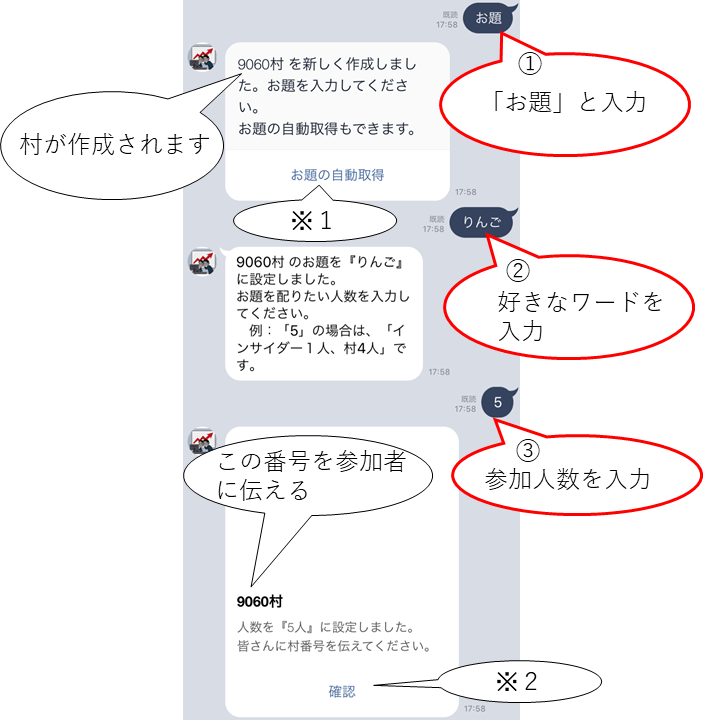
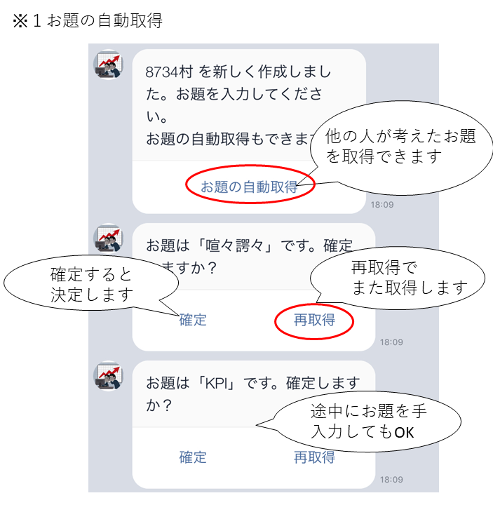
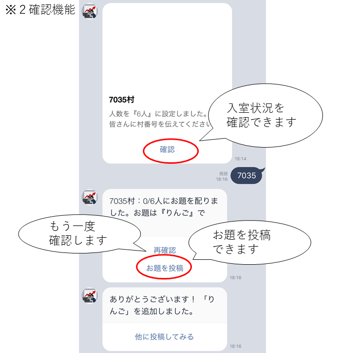
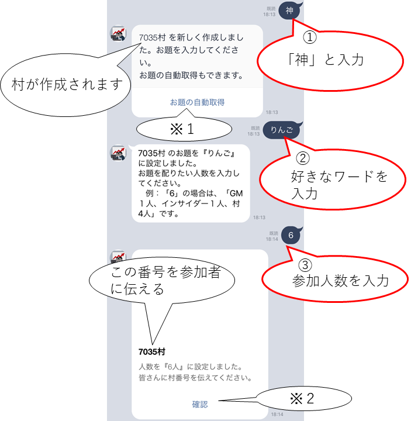
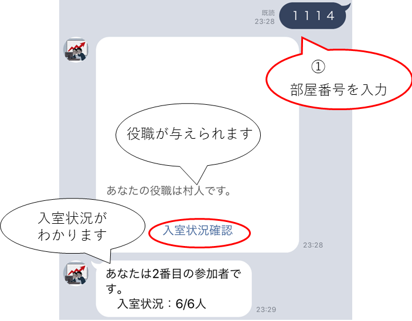
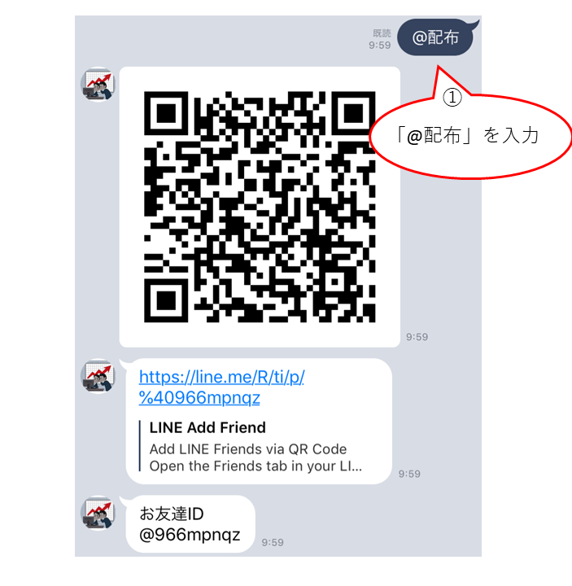

目次
前提
※参加者全員が以下のラインアカウントをお友達追加しておく必要があります！
参加者同士がお友達である必要はありません！
参加者のラインアカウントが他の参加者に知られることはありません！

■概要
①参加者の１人が村の作成をします。
『お題』と『参加人数』設定します。
村番号が表示されるため、村番号を参加者へ伝えます。
②他の参加者は作成された村の番号をボットへ入力します。
村番号（数字4桁）をラインボットへ入力すると自分の役職がわかります。インサイダーだった場合はお題が表示されます。
村を作る場合（GM）
■村の作成者がGMとなる場合
GMはお題は知っていますが、どこがインサイダーかわかりません。
作成方法（赤字が操作） ※1 ※２
※１ お題の自動取得
※２ 確認機能
村を作る場合（神）
■村の作成者が神となる場合
神はゲームに参加しません。GMとインサイダーを参加者へランダムに配ります。神もどこがインサイダーかわかりません。
作成方法（赤字が操作） ※1 ※２
村に参加する場合
■誰かが作成した村へ参加する場合
村番号を入力します。
参加方法（赤字が操作）
※インサイダーだった場合

特殊村作成（特殊役職の設定や、ワードウルフ、パズルワードなど）
■自分で設定したメッセ―ジをランダムで配ります
独自のメッセ―ジをランダムに配布します。以下のサイトから村を作成します。参加者は村に参加することで、設定されたメッセージを確認できます。

※「@特殊」とボットへ入力しても起動します
その他（オプション）
■その他の操作
その他実装している機能の紹介
ワーワーズ機能NEW
村作成後に作成者が「@わーわーず」を入力するとワーワード専用の村が作成されます。
●ルール
占師が追加されたインサイダーゲームです。
●詳細
占師はお題を知っている村人陣営です。
勝敗が変わります。
・時間内にお題が出た場合
インサイダーの人が占師を当てればインサイダーの勝ちです。
・時間内にお題が出なかった場合
インサイダーを投票で見つければ村人陣営の勝ちです。
※注意点は1人だけ役職が欠けます。
GMだけが欠けた役職を知っています。
逆村機能
村作成後に作成者が「@逆村」を入力すると逆村となります。
お題を知らない村人の役職が１人となり、他がインサイダーとなります。（GMがいる場合は、GMは１人います。）
考察のタイミングで逆村だったことを公表し、村人に票を集めるどっきりゲームとなります。
村を作成するボタン

他の人へ配布したい場合（QRコードの表示）
さらなるお題の投稿